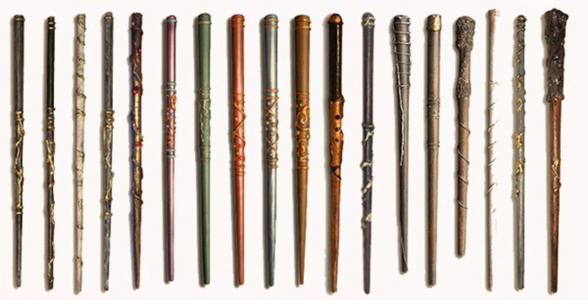

Uma varinha é um instrumento mágico quase consciente pelo qual uma bruxa ou bruxo (escolhido pela varinha) canaliza seus poderes mágicos. A maioria dos feitiços é feita com a ajuda de uma varinha, mas é possível utilizar feitiços sem varinha. Magia sem arinha é, porém, muito difícil e requer muita concentração e considerável habilidade; apenas bruxos realmente avançados sabem fazer essa forma de magia.[1] Normalmente, a magia com varinha é usada com um encantamento, mas feitiços não-verbais são também possíveis para bruxos com mais experiência e são melhores para duelos, porque o oponente não terá jeito de saber qual será o feitiço lançado e pode não ser capaz de proteger-se adequadamente a tempo. Varinhas são chamadas de "quase conscientes" porque elas são o mais próximo de animado do que um ser inanimado pode chegar. Provavelmente é porque elas são cheias de magia.
